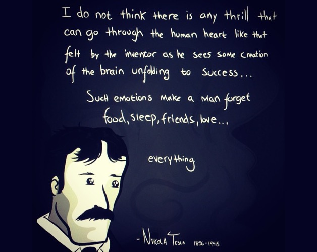
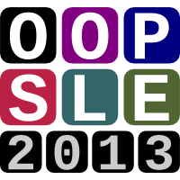
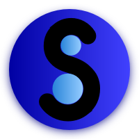
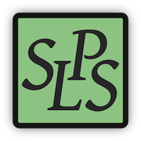
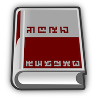
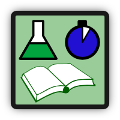
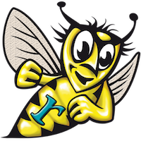
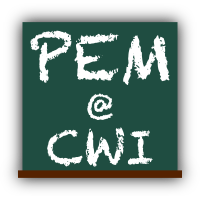

Home Page
CV, bio, lists of talks, papers, venues, contact details

OOPSLE
a workshop about open and original problems in SLE (2013–…)
UvA MSc SE
a one-year university graduate programme

SATToSE
SoTeSoLa
a regular event for collaborating on software evolution
bidirectional megamodel of parsing and unparsing in a broad sense
GrammarLab
a grammar manipulation library for Rascal (2013–…)
Grammar Zoo
collection of extracted grammars in a broad sense (2009–…)

Software Language
Processing Suite
my main repo in 2008–2012

info about international conferences in Russian

Open Notebook
nobody else is crazy enough to do open notebook computer science
Software Language Engineering Glossary
in [conceptual] development
Twitter
mostly for keeping in touch with the research community (2007–…)

Rascal
a language for metaprogramming I contributed to (2010–2013)

PEM
a colloquium I used to organise (2012–2013)
GTTSE
a summer school on hiatus (2005–2011)
The page is maintained by
Dr. Vadim Zaytsev
a.k.a. @
grammarware
. Dim tiles refer to past projects. See
copyright disclaimer
. Last updated: August 2014.